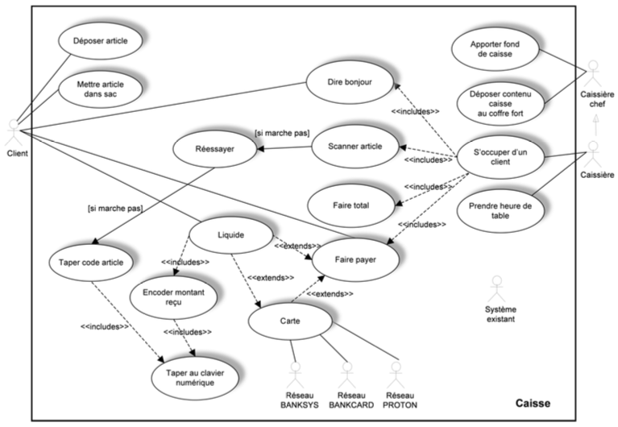
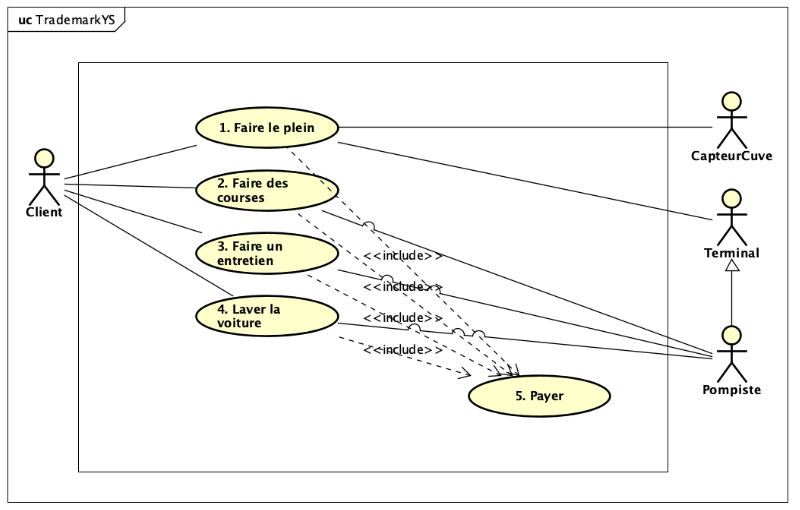

16 Practical Exercises: Use Case Diagrams
This chapter provides practical exercises for applying the concepts of UML Use Case Diagrams. The exercises focus on identifying modeling errors and on creating a new diagram from a textual description, paying close attention to actors, goals, and relationships.
16.0.1 Exercise 1: What’s wrong, Doctor?
Problem: Based on the concepts covered in the theory lectures, you are asked to identify the errors appearing in the Use Case Diagram below.

Task: Identify all the modeling errors in this diagram.
Correction Details:
Here is a list of the errors and modeling issues found in the diagram:
- Actors Inside Boundary: The
Système existant(Existing System) andRéseau...(Network…) actors are placed inside the system boundary box. All actors must be external to the system. - Reversed Generalization: The specialization arrow between
Caissière chef(Head Cashier) andCaissière(Cashier) is reversed. The arrow should point from the specialized actor (Caissière) to the general actor (Caissière chef). - Unclear Main Scenarios: The diagram does not clearly represent the primary, high-level goals of the actors.
- Poor Use Case Naming (No Goal/Value): Several use cases represent single steps or UI interactions, not user goals. For example,
Taper au clavier numérique(“Type on numeric keypad”) is a step, not a goal that provides value to the actor. - Unconnected Actor: The
Système existantactor is not connected to any use case, so its purpose in the diagram is unknown. - Unclear System Boundary: The boundary box is labeled “Caisse” (Checkout), which is ambiguous. It’s not clear if this is the name of the system being built or a department.
- Incorrect Use of Associations: The alternative case
Réessayer(“Try again”) should likely be an<<extend>>relationship modifying a main use case, not a standalone use case initiated by the actor. - Confusing Relationships: The
Liquide(Cash) use case has multiple<<extends>>relationships and an<<include>>relationship, creating a confusing and likely incorrect structure. - Misuse of
<<include>>: TheEncoder montant reçu(“Enter amount received”) use case is included by only one other use case. The<<include>>relationship is intended to factor out behavior common to multiple use cases. - Invalid Notation: The label
[si marche pas](“if it doesn’t work”) is not a valid UML Use Case construct. This logic should be represented by extension points and<<extend>>relationships. - Poor Naming: The naming for exception cases (like
Réessayer) is not descriptive of a user goal.
Key Concepts Illustrated:
- Actors must be external to the system.
- Generalization (specialization) arrows point from the subclass (specific) to the superclass (general).
- A use case must represent a complete user goal that provides added value, not a single, trivial step.
<<include>>is for mandatory, common behavior.<<extend>>is for optional, alternative behavior.
16.0.2 Exercise 2: YellowStone
Problem: You are asked to model the use cases of the Yellow Stone management system for its end-users, in the form of a Use Case Diagram. Be sure to clearly distinguish the different roles.
Note: At this stage, do not write textual descriptions or invent exceptional/exotic cases not mentioned in the text.
Context: The Yellow Stone station is investing in new software. The system must be able to manage all of the station’s services.
- Primary Service: Fueling (
Prise de carburant). - Other Services: In-station purchases (
achats au sein de la station), and in the future, car wash (lavage) and maintenance (entretien). - Payment: “Each payment for a service (fuel, purchases, wash, maintenance) results in a timestamped customer transaction.” This implies payment is a required part of all services.
- Fueling Process:
- The fueling process requires explicit authorization.
- Authorization can come from the attendant’s terminal (
terminal du pompiste) or the automated payment terminal (terminal de paiement automatisé). - A tank level sensor (
capteur de niveau dans les cuves) is checked. If the level is too low (< 3%), arming is prevented, and the attendant (pompiste) is notified of the need to order a refill.
Task: Create the Use Case Diagram for the Yellow Stone system based on the description.

Correction Details:
The solution diagram correctly identifies the actors and their goals:
- Actors:
Client: The primary actor who initiates all services.Pompiste(Attendant): A secondary actor who participates in theFaire le plein(Refuel) use case (by providing authorization) and is also notified by theCapteurCuve.Terminal: A secondary actor, also participating inFaire le plein(by providing authorization). The diagram shows it as a specialization ofPompiste(an automated attendant).CapteurCuve(Tank Sensor): A secondary actor (a device) that interacts withFaire le plein(to provide the level) and thePompiste(to send a low-level alert).
- Use Cases: The diagram identifies four main, high-level goals for the
Client:Faire le plein(Refuel)Faire des courses(Go shopping)Faire un entretien(Do maintenance)Laver la voiture(Wash car)
<<include>>Relationship: Based on the text “Each payment for a service…”, the diagram correctly identifies5. Payer(Pay) as a separate, included use case. All four main services have an<<include>>relationship pointing toPayer, indicating that payment is a mandatory, common part of completing any of those services.
Key Concepts Illustrated:
- Identifying Actors: Correctly distinguishing between the primary user (
Client) and the various secondary actors (humanPompiste, hardwareCapteurCuve, and systemTerminal). - Actor Generalization: Using generalization to show that the
Terminalplays a similar (but more specialized) role to thePompiste. - Identifying Goals: Defining clear, high-level goals for the user (
Faire le plein,Faire des courses, etc.) rather than low-level steps. - Using
<<include>>: Correctly factoring out thePayerfunctionality, which is mandatory and common to all other main use cases.